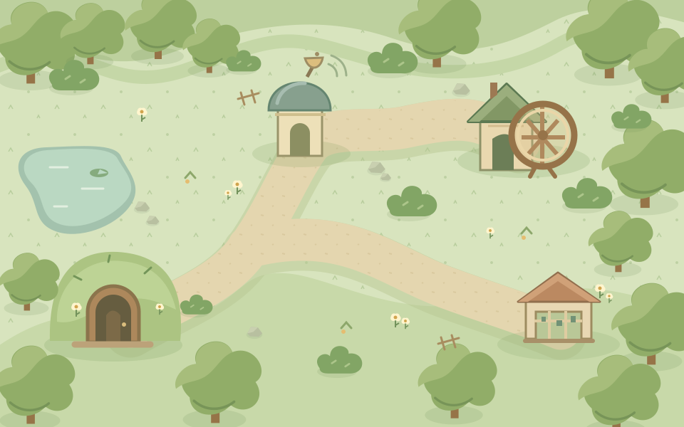

Small paws. Big discoveries.
A hamster adventure connected to the real SqueekChain.
Chain data unavailableSepolia
Squeek valley Open exploration0:00

You
Your next adventure starts here.Find seeds. Follow signals. Make discoveries.
Click the map to move or use WASD.
Local game · no wallet neededA pocket-sized adventure awaits.
A little play. A real connection.
Explore the chainThe valley is imaginary. The SqueekChain discoveries are real.
Meanwhile, on SqueekChain
Official API · 12-block confirmation delaySee sources & status